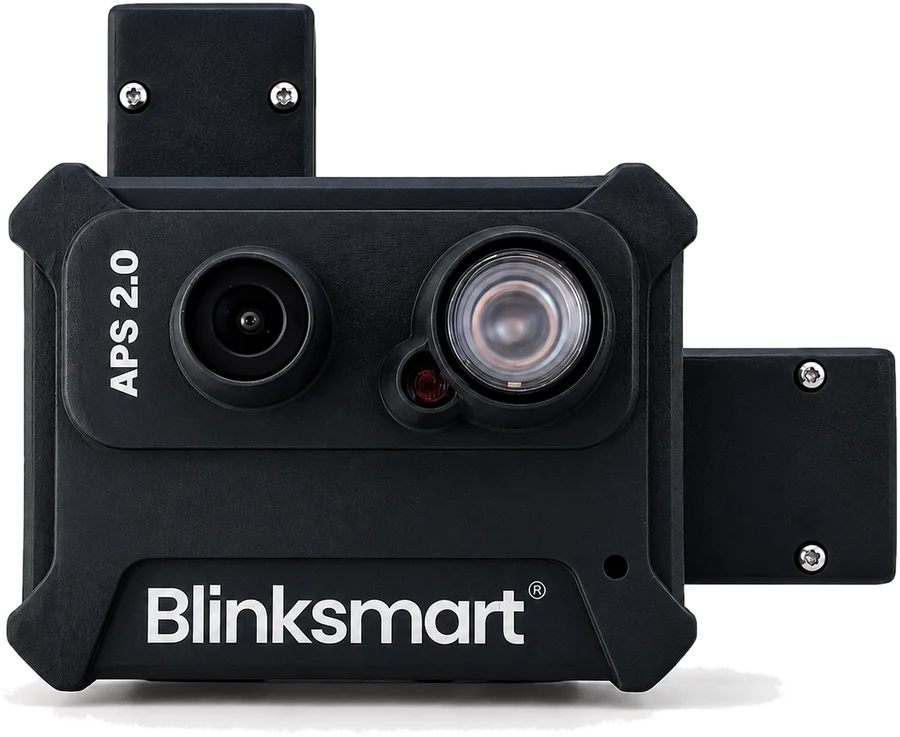
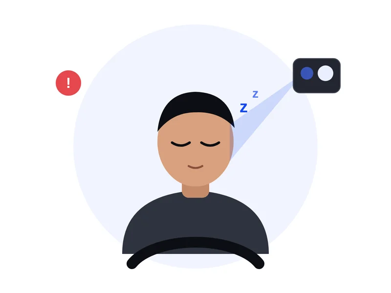

Edge AI that keeps every driver alert.
Sapience Automata™ builds the AI safety platform for every vehicle on the road: driver monitoring and ADAS that run on the vehicle, with alert accuracy above 95%.
A tired driver can drift off in a split second, without knowing it.
One moment of microsleep on a night route is all it takes. Most crashes start with the driver, which means most can be stopped by catching the driver in time.
1.7 L+
lives lost on Indian roads every year
4.8 L+
road accidents in India every year
90%
of accidents trace back to driver error
47%
of fatal accidents linked to drowsy driving
Source: MoRTH, Road Accidents in India 2023 (4,80,583 accidents, 1,72,890 fatalities); industry and fleet telematics studies on driver-error contribution.
Watches. Beeps. Logs.
01
Watches
A compact AI camera on the dashboard or A-pillar reads the driver’s eyes and face in real time.
02
Beeps
The moment the driver turns drowsy or distracted, an instant alert sounds in the cab.
03
Logs
Every alert reaches the fleet owner on the CoPilot AI™ web and mobile apps.
Built for everyone who moves people and goods.
It sees what a tired driver can’t.
Anti-sleep alarm
Eyes closing and head dropping, caught in an instant.
Fatigue detection
Yawning and long-shift tiredness, flagged early.
Distracted driving
Eyes off the road or on the phone.
Overspeed & rash driving
Speeding and harsh driving, alerted live.
No face / seizure
Alerts when the driver’s face is not visible.
Smoking & seatbelt
Unsafe habits in the cab, logged for coaching.
Unauthorised access
Facial recognition knows who is driving.
SOS
Help, one press away.
One edge device. Many safety systems.
Computer vision, behaviour analytics and edge AI on a single in-vehicle platform. Add cameras and modules as your fleet grows, without changing the box.
CoPilot AI™ edge platform
6–12 TOPS NPU. Computer vision and behaviour analytics run on the vehicle, in real time.
From one camera to full ADAS.

Blinksmart™
1 AI camera · >95% accuracy · DMS + DFMS
AI driver drowsiness and distraction warning that beeps the instant a driver drifts, and logs every alert to CoPilot AI™.

CoPilot AI™ Super-Modular ADAS
Up to 4 AI cameras · 6–12 TOPS NPU
Every ADAS module on one edge device, plus the fleet dashboard on web and mobile. Add cameras and modules as you grow.
Bike ADAS
Dual camera · Two-wheelers
Rider safety on the same edge AI, with front and rear vision for the rider and fleet data on CoPilot AI™.
2 lakh+ alerts generated.
Every one, a driver called back.
60K+ drowsiness, 80K+ distraction and 60K+ fatigue alerts so far, and 30% better driver performance within 3 months.
Accident & collision prevention
Catch drowsiness, distraction and road hazards before they turn into a crash.
Predictive safety
Patented AI that reads risk around the vehicle early, not after the fact.
Driver risk management
Scores, snapshots and coaching data for every driver.
Real-time monitoring
Live alerts and location for every vehicle, on web and mobile.
Safety analytics
Trends across routes, shifts and drivers, so you fix the cause.
Vehicle diagnostics
OBD and CAN data alongside driver behaviour on one platform.
Patented. Regulation-ready.
Patent No. 575297, granted by the Government of India, for early prediction of risks surrounding a vehicle, with 10+ more in process. Blinksmart™ is built for the DDAWS mandate in the CMVR (Sixth Amendment) Rules, 2025.
Source: G.S.R. 834(E), MoRTH, 11 Nov 2025.
Why fleets, OEMs and distributors choose us.
Proven track record
3 Cr+ km with zero fatal accidents.
Above 95% accuracy
Critical alerts with close to zero false alarms, in a non-intrusive design.
Ecosystem design
Built for both drivers and owners.
User-experience obsession
Ground-up problem solving for real cabins and real roads.
World-class tech team
Founder-led depth, 10+ years in ADAS, and global university tie-ups.
Trusted by leaders
Registered vendor of Volvo Eicher. redBus, KSRTC and CabsWale among partners.
Fully in-house
Hardware, firmware and apps developed end to end.
One-stop ADAS
One platform for every ADAS module you need. Registered OEM on the GeM portal.
50+ businesses keep their drivers alert with us.
Intercity bus operators, state transport, cab platforms, coach builders, telematics partners and OEMs across India.





“Long night drives demand constant focus. The alert system really helps me stay attentive and safer on the road.”
Driver, Punchiry Travels
Questions, answered.
How is Blinksmart™ different from a traditional DMS or dashcam?
A dashcam records the crash. Blinksmart™ watches the driver and alerts them the moment they turn drowsy or distracted, so they can correct course in time. The AI runs on the device, so alerts don’t wait on the cloud.
Is CoPilot AI™ included with Blinksmart™?
Yes. Blinksmart™ is part of the CoPilot AI™ ecosystem. Alerts, live location and driver scores reach the fleet owner on the CoPilot AI™ web and mobile apps.
Which vehicles does it work in?
Buses, trucks, cabs and special vehicles, as a retrofit or factory-fit with OEMs. CoPilot AI™ scales from one AI camera to four.
Can it predict risk, or only react?
Both. Blinksmart™ alerts on drowsiness and distraction in real time, and our patented AI is built for early prediction of risks surrounding the vehicle.
Does it help with the new DDAWS rules?
Blinksmart™ is a driver drowsiness and attention warning system built for the CMVR (Sixth Amendment) Rules, 2025. Talk to us about retrofitting your fleet.
Ready to build safer vehicles?
See Blinksmart™ and CoPilot AI™ live in your vehicle. Our team will walk you through a demo.
- info@sapienceautomata.com
- Phone
- +91 81006 75937
- Office
- Indiranagar, Bengaluru